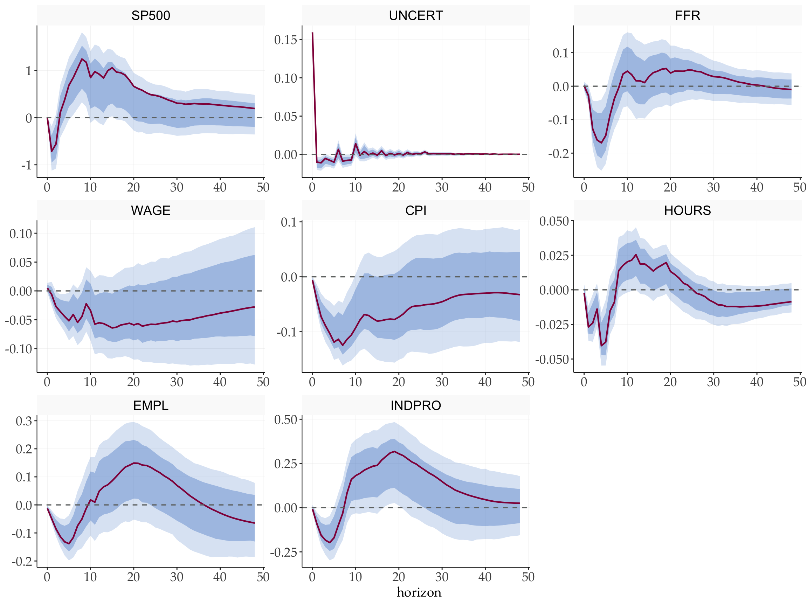
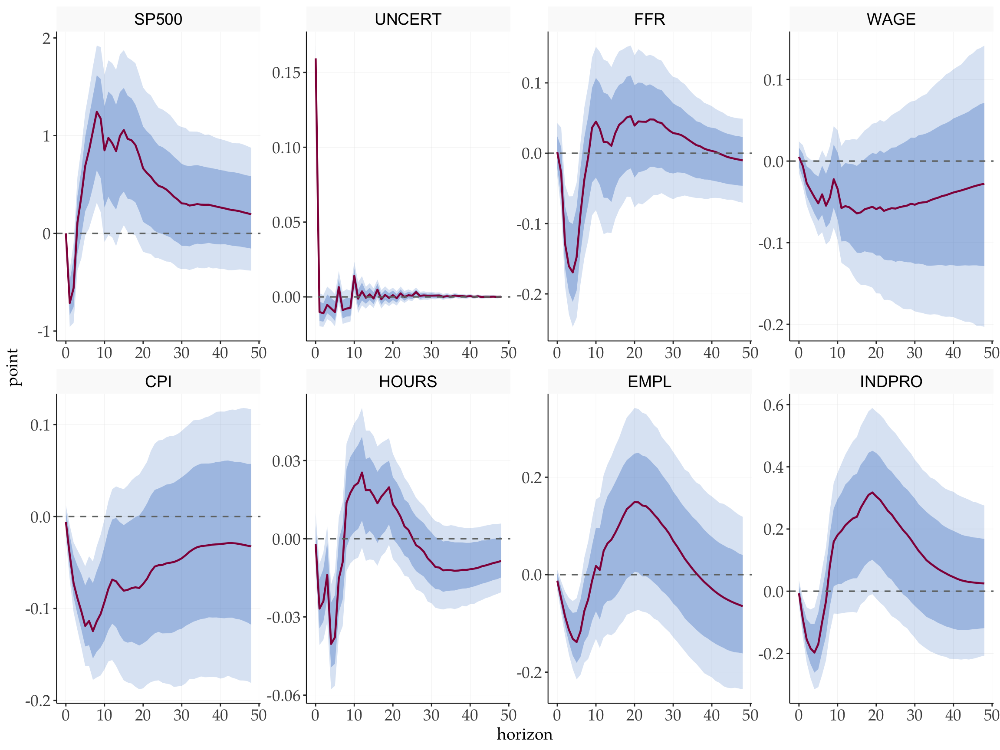
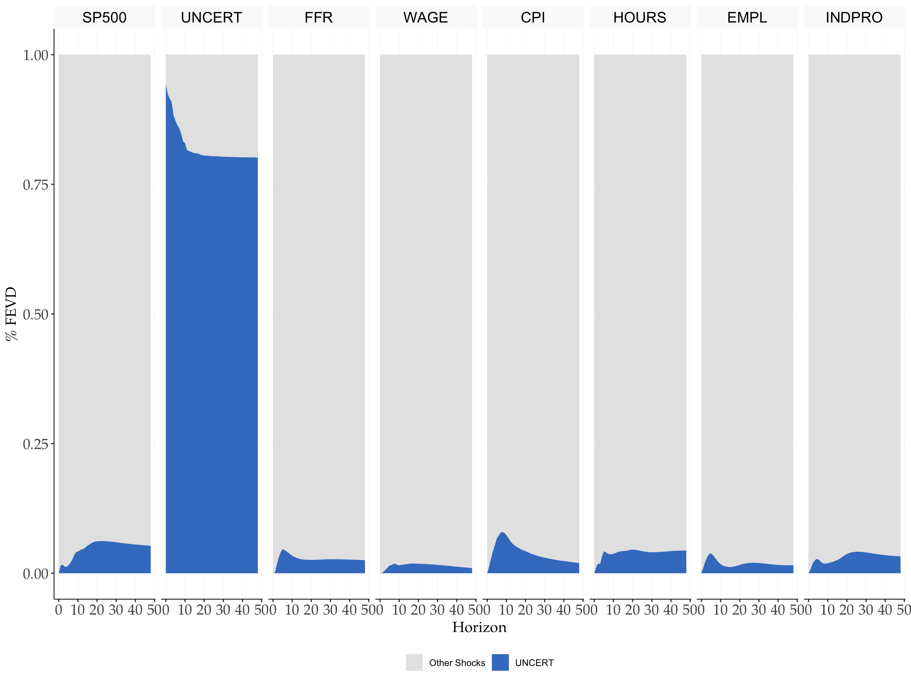

library(tidyverse)
library(tidyMacro)
library(tictoc)
set_theme(ftheme_tidyMacro())Replication: Bloom (2009)
The Impact of Uncertainty Shocks
1 Overview
This document replicates the main empirical results of Bloom (2009), which identifies uncertainty shocks using short run / recursive techniques. Data set (in all other replications as well) already come cleaned and transformed. What you see for example as x is \(log(x) * 100\)
2 Setup
3 Data
data("Bloom2009")
# See Data
Bloom2009 |> head()
#> # A tibble: 6 × 9
#> Date SP500 UNCERT FFR WAGE CPI HOURS EMPL INDPRO
#> <date> <dbl> <dbl> <dbl> <dbl> <dbl> <dbl> <dbl> <dbl>
#> 1 1962-07-01 400. 0 2.71 82.0 341. 40.5 965. 312.
#> 2 1962-08-01 406. 0 2.93 82.4 341. 40.5 965. 312.
#> 3 1962-09-01 408. 0 2.9 82.4 342. 40.5 965. 313.
#> 4 1962-10-01 403. 1 2.9 82.9 341. 40.3 965. 313.
#> 5 1962-11-01 403. 0 2.94 82.9 341. 40.5 965. 314.
#> 6 1962-12-01 413. 0 2.93 82.9 341. 40.3 965. 314.dates_vec <- Bloom2009 |> pull(Date)
y <- Bloom2009 |> select(-Date) |> as.matrix()
T <- nrow(y)
N <- ncol(y)
var_names <- colnames(y)
shockname <- "UNCERT"
shock <- match(shockname, var_names)4 VAR Estimation
p <- 12
c <- 1
var_bloom <- fVAR(y, p, c)
sigma <- var_bloom$sigma
# Cholesky factor (lower triangular)
S <- t(chol(sigma))
# Wold IRFs
horizon <- 48
wold <- fwoldIRF(var_bloom, horizon = horizon)
point_irf <- fcholeskyIRF(wold, S)5 Bootstrap Confidence Bands
5.1 Standard Bootstrap
tic()
bloom_chol <- fbootstrapChol(
y = y,
var_result = var_bloom,
nboot = 1000,
horizon = horizon,
bootscheme = "wild",
n_threads = 3
)
toc()
#> 2.729 sec elapsed5.2 Bias-Corrected Bootstrap
tic()
bloom_corrected <- fbootstrapCholCorrected(
y = y,
var_result = var_bloom,
nboot1 = 1000,
nboot2 = 1000,
horizon = horizon,
bootscheme = "wild",
n_threads = 3
)
toc()
#> 4.373 sec elapsed6 Impulse Response Functions
6.1 Standard Bootstrap
fplotirf_chol(
point = point_irf,
boot_result = bloom_chol,
shock = shock,
varnames = var_names,
facet_ncol = 3
) +
labs(y = NULL)
6.2 Bias-Corrected Bootstrap
fplotirf_chol(
point = point_irf,
boot_result = bloom_corrected,
shock = shock,
varnames = var_names,
facet_ncol = 3
) +
labs(y = NULL)
7 Forecast Error Variance Decomposition
vardec <- fevd_chol(point_irf, shock = shock)
fplot_vardec(
fevd = vardec$fevd,
varnames = var_names,
shocknames = shockname
) +
scale_fill_manual(values = tidyMacro_colors[c(2, 3)])
8 Historical Decomposition
# Exclude the shock variable itself from the response variables
series <- setdiff(seq_len(N), shock)
histdec_list <- setNames(
lapply(series, function(i) fhistdec(y, var_bloom, S, i)$histdec),
colnames(y)[series]
)
fplot_histdec(
histdec_list = histdec_list,
shock = shock,
shockname = shockname,
dates = dates_vec,
p = p,
facet_ncol = 2
) +
scale_x_date(date_breaks = "7 years", date_labels = "%Y")
References
Bloom, Nicholas. 2009. “The Impact of Uncertainty Shocks.” Econometrica 77 (3): 623–85. https://doi.org/10.3982/ECTA6248.